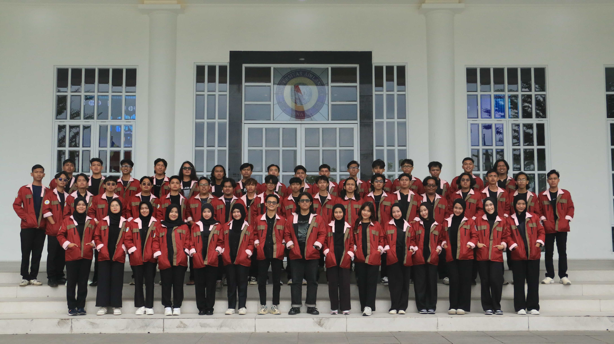

KABINET NAVIKARSA
Visi
Mewujudkan lingkungan yang inovatif, empatik, responsif, akademis, dan sinergis dalam berkarya untuk mencapai kualitas kinerja serta kemajuan HIMATRIK.
Misi
Menjadikan HIMATRIK sebagai wadah untuk menampung aspirasi dan gagasan untuk berinovasi.
Membangun keharmonisan dan saling memahami guna kemajuan HIMATRIK.
Menciptakan lingkungan yang sehat berlandaskan kekeluargaan dengan rasa saling menghargai untuk kemajuan bersama.
Menumbuhkan rasa Empati guna menciptakan etos kerja yang seimbang.
Sebagai sarana untuk mengembangkan Minat dan Bakat warga HIMATRIK dibidang Akademik maupun non-Akademik.
Filosofi Logo NAVIKARSA
- Panah Melambangkan bahwa seluruh elemen dalam himpunan bergerak menuju satu tujuan yang sama, yaitu mewujudkan perubahan yang lebih baik
- Api Menggambarkan semangat yang tidak pernah padam dalam mengembangkan dan memajukan himpunan.
- 8 Gerigi Merepresentasikan kerja sama dan sinergi delapan departemen yang bergerak berdampingan untuk mencapai tujuan organisasi
- IC Melambangkan keberagaman yang kompleks namun tetap terintegrasi, sehingga seluruh komponen mampu bergerak selaras menuju satu arah dan tujuan bersama
- Gunungan Mewakili sinergitas antar departemen dalam himpunan yang saling terhubung dan berpadu menjadi satu kesatuan yang harmonis
- Merah Maroon Menggambarkan keberanian yang kuat dan mendalam dalam melangkah dan mengambil keputusan
- Biru Tua Melambangkan profesionalitas, stabilitas, serta kepercayaan yang dijaga dalam himpunan
- Merah Muda Mencerminkan empati dan kerja sama antaranggota, serta menjadi simbol semangat muda yang dinamis, terbuka, dan saling peduli
KABINET NAVIKARSA
